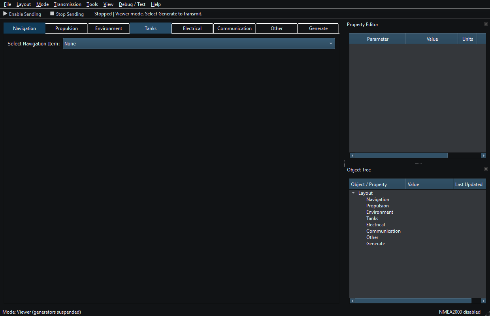
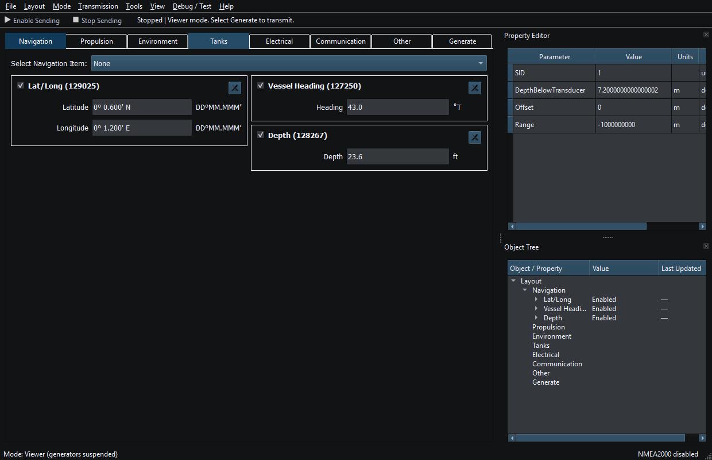
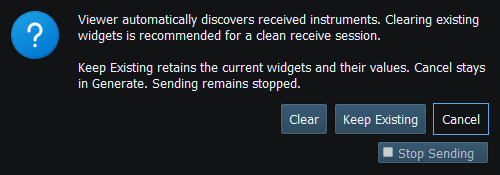
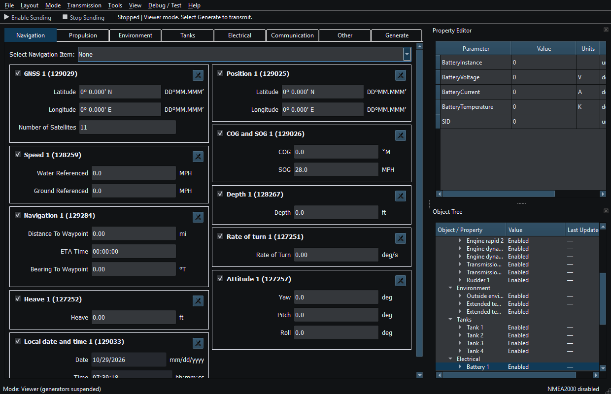
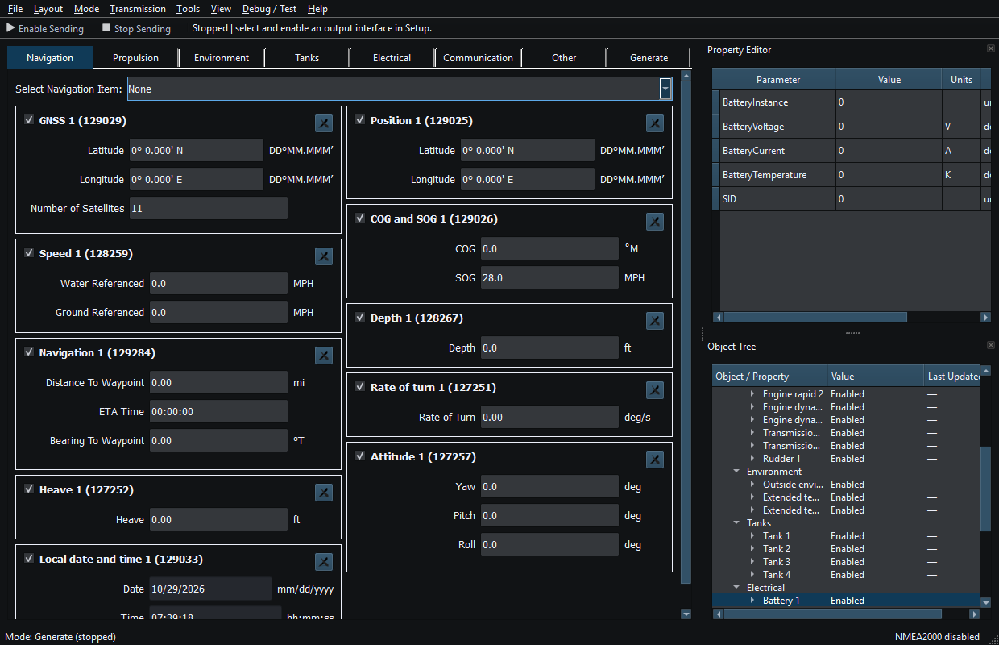

Mode defines the workspace's purpose. It is separate from a transport's connection state and from authorization to transmit instruments.
| Mode | Primary use | Ordinary instrument Sending |
|---|---|---|
| Viewer (Rx) | Receive/decode supported messages; discover and update matching instruments | Disabled |
| Generate (Tx) | Edit instrument values and optionally drive them with generators | Requires explicit Enable Sending and readiness |
RX uses the predefined Navigation, Propulsion, Environment, Tanks, Electrical, Communication and Other groups. It never automatically creates generator sources. Groups retain workspace category order, rather than becoming tabs sorted by reception time. Within a group each new stream uses the next free grid placement left to right, wrapping at configured width/span. In a fresh group this is first-arrival order, not numeric PGN order. Later updates do not reorder widgets. Retained/moved widgets and width/span changes affect placement. Dropdown numeric/alphabetic ordering is separate.
Matching uses message type, source and message-specific identity: engine instance; tank instance/type; temperature/humidity instance/source; wind reference; windlass identifier; AIS target; route/page keys. NMEA0183 uses talker identity (GP versus GN, for example) and formatter-specific identities. Matching configured instruments can all receive updates.
NMEA2000 NAME/source ownership is tracked within the transport session. Supported address changes can retain a known device; conflicting or reused addresses must not silently overwrite another live owner. Without NAME, address/session observations have less confidence. Inspect Object Tree and Diagnostics. Some discovery paths are bounded (expanded instruments, AIS streams and windlass streams); existing matches continue updating at capacity.
A raw Diagnostics/NMEA Viewer entry does not establish a supported instrument decoder. Unsupported PGNs stay raw/opaque; malformed/unsupported sentences do not create a useful widget. Route attributes/geometry can update a passive cache without a widget. See Supported NMEA2000 PGNs and Supported NMEA0183 Sentences for direction/field limits.
Viewer suspends generators and ordinary Sending. Received/displayed values never authorize output. Saved RX Layouts are snapshots, not subscriptions to the original vessel.
Switching modes does not grant new Sending permission. Existing Enable states and saved values are configuration, not global authorization. A received Layout loaded later in Generate is a simulation snapshot: it does not reconnect to or subscribe to the original vessel. Confirm which local generator sources are enabled before letting them update captured values.
Bounded chartplotter/device service requests have their own explicit authorization and transport policy. Viewer restrictions on ordinary instruments must not be interpreted as permission to browse routes automatically. See Route Requests and Authorization.

Viewer before reception, with an empty Layout and Sending disabled. Click to enlarge.

Position, heading and depth instruments appear in first-arrival order as messages are received. Click to enlarge.

Figure 3. Viewer entry offers Clear, Keep Existing or Cancel. Sending is revoked before this choice. Click to enlarge.

Figure 4. Viewer shows received instruments while ordinary Sending is disabled. Click to enlarge.

Figure 5. Generate mode permits editing and simulation; switching modes does not authorize transmission. Click to enlarge.
Introduction · System Requirements · Installation and First Launch · Quick Start · Loading the Default Layout · Connection Troubleshooting · Enable, Dispatch and Sending · Route Overview · Engineering Units